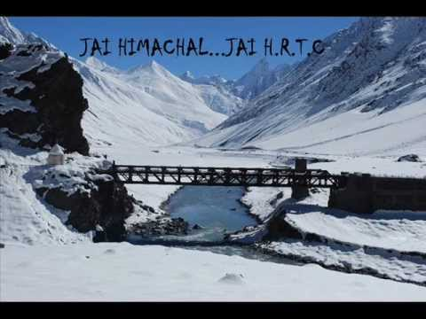
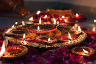
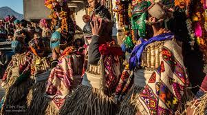
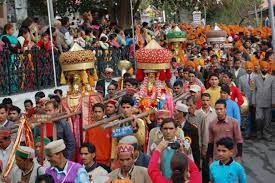
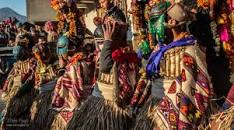
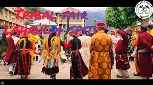
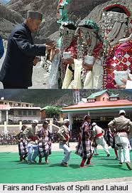

LAHAUL and SPITI:
One of the 3 least populated districts in India, Lahaul and Spiti is a high altitude district in Himachal Pradesh. The place is famous for its various high altitude trek trails and a rich Tibetan influenced culture. Being home to a huge list of monasteries, flora, and fauna and various high mountain passes and rivers, Lahaul and Spiti is a major tourist attraction. The best places to visit in Lahaul and Spiti are as follows.

Famous Places Around Kangra :
1.Festival Of Light (Khogla):
First one on our list is the Lahaul variant of Diwali. Popularly known as Khogla in Pattan and Halda in the remaining valleys of Lahaul; this festival of light is celebrated in the second and third week of January.
A traditional torch called Halda is made for the occasion by cutting the pencil cedar branches into fine strips; later tied together to form the torch. These Haldas also hold a close resemblance to the Hola’s made in upper Shimla regions. Each household lights their respective Halda in the evening and the entire neighborhood then brings it together at a pre-decided center place. Each time paying homage to a separate deity of the region, the process is repeated from four to five times. As others pay respect to their diety, natives in the Gahar valley also curse the Ranas of other hostile clans during the process while honoring their own deities.

2. Fagli Festival :
Locally referred to as Kus/ Kuns, Fagli is an almost Desi version of Thanksgiving. Various rituals of the day also include the head couple of the family expressing their gratitude towards their deities, elders and their cattle. Celebrations in the later days also include an exchange of gifts among friends and relatives.
The festival begins on the day of Amawasya during the first or second week of February after a fortnight of Khogla. Villagers in the Pattan Valley light oil lamps and also decorate their houses for the occasion. Additionally, a Baraza is set up; consisting of a 2-3 feet tall bamboo stick mounted on the floor draped in a white chader to represent the angel of Shikhara- Appa. The angel in turn is considered to be the grandmother of the peak and believed to bring prosperity with her visit to a home.
The festival is also marked by the ritual of preparation of Totu and Kwari by the eldest couple in the family earlier in the morning. While Totu is distributed as Prasad among the family members; Kwari is later thrown to the crows. The couple also goes on to pay their annual respects to their cows and sheep acknowledging their dependence on the cattle for survival.
Other family members also pay their respects to their elders as they wake up and families visit their close relatives and aged people in the vicinity later in the morning. Interestingly, each day of the festival is given a special name suggesting the day’s significance. For instance, one day is called “punha” signifying ploughing. It is observed by symbolic ploughing as fields are covered under snow during this time.

3. Gothsi (Gochi) Festival:
Particularly celebrated among households where a son was born in the preceding year, Gothsi is celebrated in the Bhaga valley in the month of February. All the villagers gather in the morning and Sattu dough is made. It is placed in a big plate and taken to the place of the village deity. A young girl carrying a pot of chhang (a local drink) also accompanies the four men carrying the big plate.
Joined by the new mothers who recently had their first son; the young girl is also followed by two more men. They carry a burning stick of pencil cedar and cedar leaves tied together in a lamb skin. The village priest called the Labdagpa worships the God with a bow and an arrow and the dough is broken and thrown away to appease gods. Later, the lamb skin is also placed near the idol of the village deity and is shot at by arrows. Throughout the ceremony, you will also notice ironsmiths beating the drums. After completing the rituals of the day, people return to their homes to celebrate with their families.

4.Tsheshu Fairs:
Coming as a festive relief after the long winters; Tsheshu fair marks the beginning of Summer in the Spiti valley. It is celebrated across monasteries in Gemur, Kardang, Kyi, Mane, Shashur and Tabo. It is usually organized in the months of June or July.
Devil dance performed by the Lamas is the major attraction of this fair. Lamas are dressed in colorful attires adorning masks representing different birds and animals as a large number of devotees gather to witness the celebrations.
The long awaited fair also serves as a reunion occasion for the locals and is indicative of an end to the particularly harsh life of the winter. It aims to rejuvenate their spirit and inspire hopes of prosperity with the coming of a warmer season.

5. Keylong Tribal Fair and Festival :
Keylong Tribal Fair is popularly referred to as the Kumbh of the valley. Corresponding with the Indian Independence day, the tribal fair is held between 14th to 16th of August. It is organized at the police ground in Keylong; the present district headquarters of Lahaul and Spiti.
The cultural festival attracts not only people from the region but also from across the country and abroad. It has been recognized as a State level fair and is thus celebrated with a great show. Apart from local artists, cultural troupes and artists are also invited from Chamba, Dharamshala, Kullu, Leh and Chandigarh to make it even more lively and vibrant.

6. Pauri Fair :
A Lahaul contemporary of Ladarcha, Pauri fair is also celebrated in the 3rd week of August. However, in a major contrast, it is characterized by pilgrimage and festive activities rather than traditional trade. In a pleasing sight of unity and solidarity, people of all casts and creeds from Lahaul as well as Chamba and Kullu come together to join in the celebrations.
Locals usually begin their preparations at least a week before and the fair begins with all going for the darshan of the Triloknath statue of Lord Shiva. It is followed by three or seven clockwise parikrama in the designated parikrama gallery along with the soft chanting of “OM MANI PADME HUM” mantra. The fair begins post these obeisance and temporary shops and stalls are set up at the fairground. The locals organize themselves in a huge circle and dance to the melody of folk songs in the evening.
In the most important part of the ritual; a traditional procession is taken out on the second day. Headed by the Thakur of Triloknath riding on a decorated horse; the procession leads its way to the seven springs from where the seven gods of the region had appeared as per the folk tales. It later returns to the ground for some more festivities for the day.
